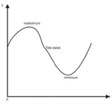

FUNGSI
Fungsi Linear
Notasi Fungsi, Domain, dan Range
f∶A→B
f∶x→y
Fungsi dinotasikan dengan huruf non kapital seperti f, g,atau h.
Himpunan dari nilai x disebut daerah asal atau domain.
Daerah asal fungsi f dinotasikan Df.
Himpunan dari nilai y = f(x) disebut daerah hasil atau range.
Daerah hasil fungsi f dinotasikan Rf.
Bentuk Umum Fungsi Linear
CONTOH FUNGSI LINEAR :
f(x)=5x+3 f(x)=8-1/5 x
f(x)=4-3x f(x)=3x
f(x)=2/3 x-7 f(x)= -1/4 x
Grafik Fungsi Linear
Contoh:
Gambarlah grafik fungsi f(x)=2x+1 dengan Df = { x|-1≤x≤3,∈ Bilangan bulat}
Penyelesaian:
Gambar Grafik:
Menentukan Domain dan Range Grafik Fungsi Linear
Fungsi Kuadrat
Fungsi kuadrat adalah fungsi yang berpangkat dua.
Bentuk Umum Fungsi Kuadrat
f(x)=ax^2+bx+c a≠0f(x)=3x^2-2x+1 -f(x)=7+2x-x^2
f(x)=2x^2+3x-2 f(x)=x^2-4
f(x)= x^2-4
Grafik Fungsi Kuadrat
Titik Potong Grafik dengan Sumbu X
Jika fungsi memotong sumbu x, maka fungsi tersebut memotong sumbu x ketika f(x)=y=0Contoh:
Tentukan koordinat titik potong fungsi kuadrat f(x)=x^2-5x+6 terhadap sumbu x
Jawab:
f(x)= x^2-5x+6
0= x^2-5x+6
x^2-5x+6=0
Titik Potong Grafik dengan Sumbu Y
Contoh:Tentukan koordinat titik potong fungsi kuadrat f(x)= x^2-5x+6 terhadap sumbu y
Jawab :
f(x)= x^2-5x+6
f(0)=0^2-5(0)+6
f(0)=6
Jadi koordinat titik potong terhadap sumbu y adalah (0,6)
Titik Puncak/Titik Balik/Titik Ekstrim
p(-b/2a,-d/4a)
f(x)=ax^2+bx+c
Sumbu Simetri
x = xp = -b / 2a
Nilai Maksimum/Minimum
-D/4a
Contoh :
Persamaan kuadrat yang diberikan:
y = x² - 4x + 4
1. Koordinat Titik Puncak
Koordinat titik puncak P = (xp, yp) dihitung dengan:
- xp = -b / 2a
- yp = -D / 4a = -b² + 4ac / 4a
Substitusi nilai a = 1, b = -4, dan c = 4:
xp = -(-4) / (2 * 1) = 2
yp = -(-4)² + 4(1)(4) / (4 * 1) = 0
Jadi, koordinat titik puncak adalah P(2, 0).
2. Persamaan Sumbu Simetri
Sumbu simetri adalah garis vertikal yang melalui xp:
x = 2
3. Nilai Maksimum/Minimum
Karena nilai a (koefisien x²) adalah positif, grafik terbuka ke atas sehingga nilai minimum ada di yp.
Nilai minimum adalah 0.
Contoh:
Perhatikan grafik dibawah ini
Tentukanlah:
1. Nilai f(5)+f^(-1) (-1)
2. Daerah asal fungsi f(x)
3. Daerah hasil fungsi f(x)
Jawab:
1. f(5)+f^(-1) (-1)=3+3=6
2.Daerah asal fungsi f(x)D_f={x│x∈R}Z
3. Daerah hasil fungsi f(x)R_f={y|y≥ -1,y ∈R}
FUNGSI KUBIK
Adalah fungsi yang pangkat tertinggi dan variabelnya adalah pangkat tiga.
Bentuk Umum
f(x) = ax³ + bx² + cx + d
Di mana:
- a, b, c, dan d adalah bilangan real
- a ≠ 0
Fungsi kubik dasar adalah f(x) = x³. Karena fungsi kubik melibatkan polinomial derajat ganjil, maka fungsi tersebut setidaknya memiliki satu akar real.
Titik Belok dan Titik Ekstrim
Setiap fungsi kubik setidak-tidaknya mempunyai sebuah titik belok (inflexion point), yaitu titik peralihan bentuk kurva dari cekung menjadi cembung.
Selain titik belok, sebuah fungsi kubik mungkin pula mempunyai:
- Satu titik ekstrim (maksimum atau minimum)
- Dua titik ekstrim (maksimum dan minimum)
Ada tidaknya titik ekstrim dalam suatu fungsi kubik tergantung pada besarnya nilai-nilai b, c, dan d dalam persamaannya.
Gambar dibawah memperlihatkan fungsi-fungsi kubik yangmempunyai titik ekstrim
Contoh Perhitungan Fungsi Kubik
Fungsi kubik yang diberikan:
y = x³ - x² - 5x + 2
Langkah Perhitungan :
-
x = -3
y = (-3)³ - (-3)² - 5(-3) + 2
= -27 – 9 + 15 + 2
= -36 + 17
= -19 -
x = -2
y = (-2)³ - (-2)² - 5(-2) + 2
= -8 – 4 + 10 + 2
= 0 -
x = -1
y = (-1)³ - (-1)² - 5(-1) + 2
= -1 – 1 + 5 + 2
= 5 -
x = 0
y = 2 -
x = 1
y = 1³ - (1)² - 5(1) + 2
= 1 – 1 – 5 + 2
= -3 -
x = 2
y = (2)³ - (2)² - 5(2) + 2
= 8 – 4 – 10 + 2
= -4 -
x = 3
y = (3)³ - (3)² - 5(3) + 2
= 27 – 9 – 15 + 2
= 5

Fungsi Trigonometri
Fungsi trigonometri mempelajari hubungan antara sudut-sudut dan sisi-sisi dalam segitiga.
Unsur
-
Periode
Adalah jarak antara dua puncak atau dua lembah pada grafik fungsi trigonometri, atau dapat diartikan juga sebagai jarak terjadinya grafik fungsi trigonometri tersebut berulang. -
Amplitudo
Merupakan setengah dari selisih nilai maksimum dan nilai minimum dari suatu fungsi.
Rumus: A = (ymax - ymin) / 2 -
Nilai Maksimum
Adalah nilai tertinggi yang bisa dicapai oleh suatu fungsi trigonometri. Pada grafik, nilai maksimum merupakan titik puncak atau bukit. -
Nilai Minimum
Adalah nilai terendah yang bisa dicapai oleh suatu fungsi trigonometri. Pada grafik, nilai minimum merupakan titik terendah dari lembah.
Jenis-Jenis Fungsi Trigonometri
-
Grafik Fungsi Sinus (y = sin(x))
Nilai dari fungsi sinus adalah -1 ≤ sin(x) ≤ 1
-
Grafik Fungsi Cosinus (y = cos(x))
Nilai dari cosinus adalah -1 ≤ cos(x0 ≤ 1)
-
Grafik Fungsi Tangen (y = tanx)
Grafiktangen tidak mempunyai nilai maksimum
Contoh 1:
Tentukan nilai maksimum dan nilai minimum dari fungsi trigonometri di bawah in!
a. f(x) = 2 sin 2x + 5
b. f(x) = -3 cos (3(x+90°)) – 8
Penyelesaian:
a. f(x) = 2 sin 2x + 5 → a = 2 , c = 5
Nilai maksimum = |a| + c = |2| + 5 = 7
Nilai minimum = -|a| + c = -|2| + 5 = 3
b. f(x) = -3 cos (3(x+90°)) – 8
f(x) = – 3 cos (3x+270°) – 8 → a = -3 , c = -80/1 =3
Nilai maksimum = |a| + c = |-3| + (-8) = 3 – 8 = -5
Nilai minimum = -|a| + c = -|-3| + (-8) = -3 – 8 = -11
Contoh2 :
y=2sin(x-π/3)
- >π/3=180/3=60° atau π/3=1,04
- A = 2 -> max = 2, min = -2
- T=360/a=360/1=360
Fungsi Eksponensial
Sifat-Sifat Eksponensial
Bentuk Umum
f(x) = k . ax
dengan syarat a > 0 dan a ≠ 1.
Sifat-Sifat Eksponensial
-
Pangkat Penjumlahan
am . an = am+n
(Perkalian eksponen dengan basis yang sama, pangkatnya dijumlahkan)
Contoh: 42 . 43 = 42+3 = 45 -
Pangkat Pengurangan
am : an = am-n
(Pembagian eksponen dengan basis yang sama, pangkatnya dikurangi)
Contoh: 45 : 43 = 45-3 = 42 -
Pangkat Perkalian
(am)n = am × n
(Bilangan berpangkat yang dipangkatkan lagi, pangkatnya dikali)
Contoh: (42)3 = 42×3 = 46 -
Perkalian Bilangan yang Dipangkatkan
(a . b)m = am . bm
(Perkalian bilangan yang dipangkatkan, masing-masing bilangan dipangkatkan juga)
Contoh: (3 . 5)2 = 32 . 52 -
Perpangkatan pada Bilangan Pecahan
(a / b)m = am / bm
(Bilangan pecahan yang dipangkatkan, pembilang dan penyebut dipangkatkan semua, dengan syarat b ≠ 0)
Contoh: (5 / 3)2 = 52 / 32 -
Pangkat Negatif
1 / an = a-n
(Jika eksponen dipindahkan ke penyebut atau pembilang, tanda pangkat berubah)
Contoh: 1 / 46 = 4-6 -
Pangkat Pecahan
√nam = am/n
(Akar pangkat n pada am, pangkat m menjadi pembilang, dan n menjadi penyebut dengan syarat n ≥ 2)
Contoh: ∜36 = 36/4 -
Pangkat Nol
a0 = 1
(Syarat: a ≠ 0, karena jika a = 0 hasilnya tidak terdefinisi)
Contoh Soal
y = 3-x + 2-x dan y = 3x + 2x
Grafik :
Gimana nih temen temen, seru kan belajar fungsi bareng Granyda. Selain itu, sobat Granyda juga bisa bikin grafik sendiri loh. Sobat cukup klik "Grafik" yang ada di atas atau bisa klik disini.